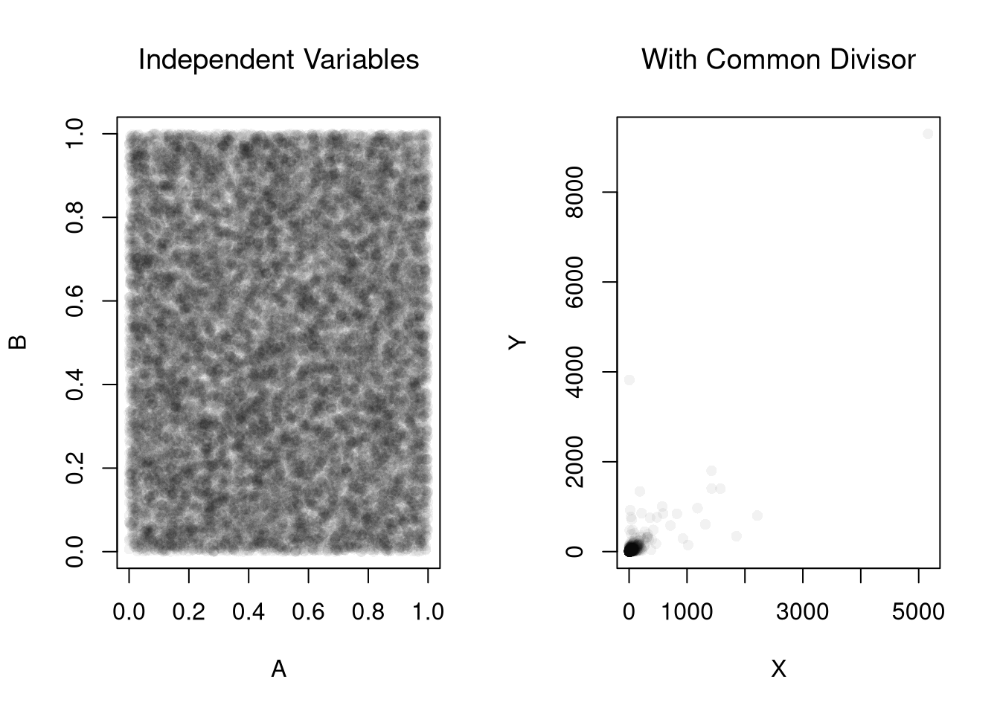
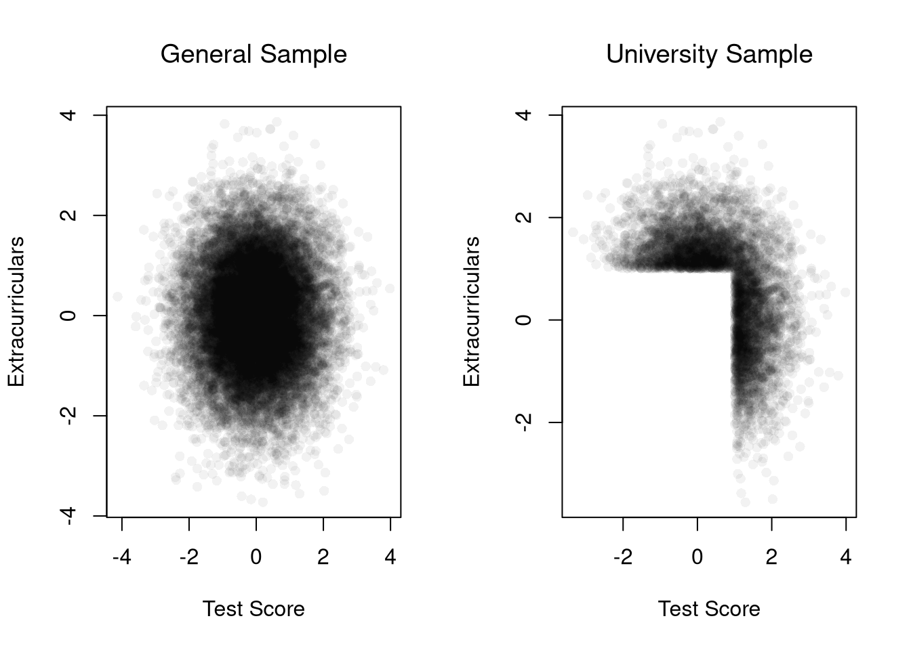
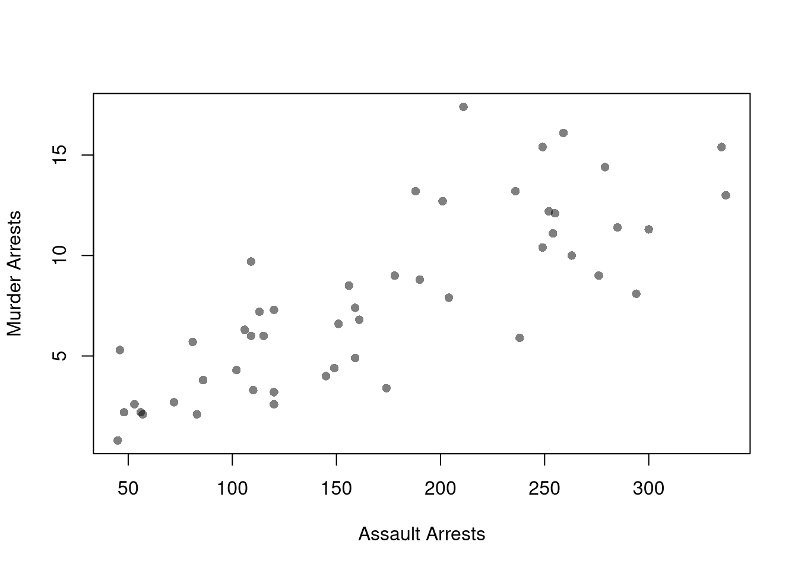

Code
# Admission rate by Gender, pooled over departments
ucb_pooled <- prop.table(margin.table(UCBAdmissions, c(1, 2)), margin=2)
round(ucb_pooled['Admitted', ], 2)
## Male Female
## 0.45 0.30Earlier chapters described how two variables move together, fitted predictive models, and measured uncertainty about those summaries. None of those tools alone identifies what would happen to \(Y_{i}\) if we intervened and changed \(X_{i}\). This chapter brings together three warnings: Simpson’s paradox shows that pooling groups can reverse a relationship, association can appear without causation or causation without linear correlation, and a model that predicts well need not answer a causal question.
A relationship visible inside every subgroup can flip direction once those subgroups are pooled. The conditional distributions from Chapter 11 compare outcomes within values of another variable; adding a subgroup \(g\) lets us compare \(\hat{p}(y\mid x,g)\) within each group to the pooled \(\hat{p}(y\mid x)\).
Simpson’s paradox is useful as a warning whenever you are tempted to pool subgroups: the pooled relationship reflects both the within-group pattern and how the subgroups differ in size. The base-rate fallacy is a related composition effect: a category’s share of a pooled statistic can be driven by its size rather than its rate. The classic example involves graduate admissions at the University of California, Berkeley, in 1973. R ships the data as UCBAdmissions, a three-way table of applicants by admission status (Admit), sex (Gender), and department (Dept). Pooled over all six departments, men were admitted at a higher rate than women.
# Admission rate by Gender, pooled over departments
ucb_pooled <- prop.table(margin.table(UCBAdmissions, c(1, 2)), margin=2)
round(ucb_pooled['Admitted', ], 2)
## Male Female
## 0.45 0.30Within departments, the gap mostly disappears or reverses.
# Admission rate by Gender within each department
ucb_within <- prop.table(UCBAdmissions, margin=c(2, 3))
round(ucb_within['Admitted', , ], 2)
## Dept
## Gender A B C D E F
## Male 0.62 0.63 0.37 0.33 0.28 0.06
## Female 0.82 0.68 0.34 0.35 0.24 0.07
# Share of each Gender's applicants going to each department
ucb_apply <- prop.table(margin.table(UCBAdmissions, c(2, 3)), margin=1)
round(ucb_apply, 2)
## Dept
## Gender A B C D E F
## Male 0.31 0.21 0.12 0.15 0.07 0.14
## Female 0.06 0.01 0.32 0.20 0.21 0.19Women had higher admission rates than men in four of the six departments (A, B, D, and F). Men applied mostly to departments A and B, which admitted over \(60\%\) of applicants. Over \(90\%\) of women applied to departments C to F, which admitted \(35\%\) of applicants or fewer. The pooled gap mostly reflects where men and women applied, not how each department treated them. The example is part of a real debate about discrimination (http://homepage.stat.uiowa.edu/~mbognar/1030/Bickel-Berkeley.pdf) and the same logic applies to the gender pay gap, cross-country growth comparisons, and many other social issues.1 Neither the pooled rates nor the within-department rates alone identify what would happen under an intervention.
Sampling variability is one problem: relationships in the population may not appear in a sample, and apparent sample relationships may not exist in the population. Inference helps quantify that uncertainty, but statistical significance does not distinguish association from causation. Two other problems remain: real relationships can average out, and random data can acquire mechanically induced relationships. To make both problems concrete, we focus on the Pearson correlation from Statistics of Association and examine
Examples of the first problem include nonlinear effects and heterogeneous effects that average out. For example, wages tend to rise with age early in a career and then flatten or fall, and a minimum wage increase can raise pay for some workers while others lose their jobs.
set.seed(123)
n <- 10000
# X causes Y via Y = X^2 + noise
x_sim <- runif(n, min = -1, max = 1)
epsilon <- rnorm(n, mean = 0, sd = 0.1)
y_sim <- x_sim^2 + epsilon # clear causal effect of X on Y
plot(x_sim, y_sim, pch=16, col=grey(0, .05),
main=NA, xlab='X', ylab='Y')
# Correlation over the entire range
title( paste0('Cor: ', round( cor(x_sim, y_sim), 1) ) ,
font.main=1)
# Heterogeneous Effects
x_sim <- rnorm(n) # Randomized 'treatment'
# Heterogeneous effects based on group
group <- rbinom(n, size = 1, prob = 0.5)
epsilon <- rnorm(n, mean = 0, sd = 1)
y_sim <- ifelse(group == 1,
x_sim + epsilon, # positive effect
-x_sim + epsilon) # negative effect
plot(x_sim, y_sim, pch=16, col=grey(0, .05),
main=NA, xlab='X', ylab='Y')
# Correlation in the pooled sample
title( paste0('Cor: ', round( cor(x_sim, y_sim), 1) ),
font.main=1 )
Examples of the second problem include shared denominators and selection bias that induce correlations.
Consider three completely random variables. We can induce a mechanical relationship between the first two variables by dividing them both by the third variable. Per-capita statistics are a common real case, such as crimes per resident and police officers per resident across cities, which share population as the denominator.
set.seed(123)
n <- 20000
# Independent components
A <- runif(n)
B <- runif(n)
C <- runif(n)
par(mfrow=c(1, 2))
plot(A, B, pch=16, col=grey(0, .05),
main=NA, xlab='A', ylab='B')
title('Independent Variables', font.main=1)
# Ratios with a shared denominator
x_sim <- A / C
y_sim <- B / C
plot(x_sim, y_sim, pch=16, col=grey(0, .05),
main=NA, xlab='X', ylab='Y')
title('With Common Divisor', font.main=1)
# Correlation
cor(x_sim, y_sim)
## [1] 0.8183118Consider an admissions rule into university: applicants are accepted if they have either high test scores or strong extracurriculars. Even if there is no general relationship between test scores and extracurriculars, you will see one amongst university students. Real datasets are often selected in a similar way; for example, Wages1 only includes people with observed wages, so its relationships describe workers rather than everyone who could have worked.
# Independent traits in the population
test_score <- rnorm(n, mean = 0, sd = 1)
extracurriculars <- rnorm(n, mean = 0, sd = 1)
# Selection above thresholds
threshold <- 1.0
admitted <- (test_score > threshold) | (extracurriculars > threshold)
mean(admitted) # admission rate
## [1] 0.29615
par(mfrow = c(1, 2))
# Full population
plot(test_score, extracurriculars,
pch=16, col=grey(0, .05),
main=NA, xlab='Test Score', ylab='Extracurriculars')
title('General Sample', font.main=1)
# Admitted only
plot(test_score[admitted], extracurriculars[admitted],
pch=16, col=grey(0, .05),
main=NA, xlab='Test Score', ylab='Extracurriculars')
title('University Sample', font.main=1)
# Correlation among admitted applicants only
cor(test_score[admitted], extracurriculars[admitted])
## [1] -0.5597409Real data often mix several of these issues. The USArrests data record arrests per \(100,000\) residents in each U.S. state in 1973. States with more assault arrests also tend to have more murder arrests.
plot(Murder ~ Assault, USArrests, pch=16, col=grey(0, .5),
main=NA, xlab='Assault Arrests', ylab='Murder Arrests')
# Correlation across states
cor(USArrests$Murder, USArrests$Assault)
## [1] 0.8018733The correlation is about \(0.8\), but this does not mean that assaults cause murders. Both variables are divided by the same state population. Both also likely respond to common factors, such as policing practices or local economic conditions.
Note that the examples above are not the only examples of “correlation does not mean causation”. Many real datasets have temporal and spatial interdependence that create additional issues. Many real datasets also have economic interdependence, which also creates additional issues.
A model can predict \(Y_{i}\) well and still not tell us what would happen to \(Y_{i}\) if we changed \(X_{i}\). The bias in the bias-variance tradeoff is the gap between a model’s average prediction and the population mean of \(Y_{i}\) at each value of \(X_{i}\). A model with no such bias and little variance still only describes how the mean of \(Y_{i}\) differs across values of \(X_{i}\). In the Berkeley data, Gender predicts admission in the pooled table, yet most of that gap reflects where men and women applied. Accurate prediction across samples does not establish that changing \(X_{i}\) would cause \(Y_{i}\) to change.
Comment the script you wrote for this chapter, then restart R and check that it runs from a clean session, then check the script with AI as explained in Working with AI. Write three sentences from memory on the main statistical idea of this chapter, and ask the assistant what is wrong, vague, or missing. Finish with your own questions about whatever you found hardest.
Use UCBAdmissions to compute what the pooled admission rate for men and for women would be if both applied to the six departments in the same proportions as all applicants combined. To do this, weight each group’s within-department admission rates by the combined share of applicants in each department. Compare these adjusted rates with the pooled rates shown in this chapter, then explain why the adjustment does not by itself establish whether admissions were discriminatory.
Give an example of a dataset where Pearson’s correlation \(\hat{r}_{XY}\) is close to zero but there is a clear causal relationship between \(X_{i}\) and \(Y_{i}\). What feature of the relationship causes the correlation to miss it, and which alternative statistic from Statistics of Association might detect it?
Explain why a model can have low prediction error but still fail to estimate the causal effect of \(X_{i}\) on \(Y_{i}\). In your answer, distinguish the bias-variance tradeoff from confounding and selection bias.
Simpson’s paradox showed that a pooled relationship can reverse the within-group relationships: at Berkeley, men had the higher pooled admission rate even though women had the higher rate in four of six departments. The correlation examples showed both causation without linear correlation and correlation without causation. Gender also predicts admission in the pooled Berkeley table, but that prediction does not identify how Gender affects admission.
A ratio can also change due to changes in either the numerator or the denominator.↩︎